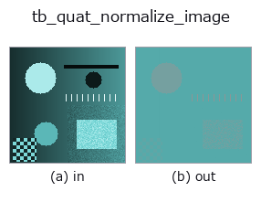

typed op• Datenarten: qimage → qimage
• Aufruf: fullseye.apply(img, "tb_quat_normalize_image", a=0.5, b=0.5) (das 2-D-Modell ist ein Bild plus zwei skalare Regler a,b∈[0,1])

*Die Abbildung ist die tatsächliche Ausgabe auf einer synthetischen 128×128-Eingabe. Links Eingabe, rechts Ausgabe. Punktwolken als Draufsicht-Streudiagramm (Helligkeit = z), 1-D-Reihen als Linie, Volumen als Maximum-Projektion entlang z, Videos als mittleres Bild, komplexe Bilder als Betrag; Rückgabewerte, die kein Bild ergeben, werden als Werte gezeigt.*
*Regler a ändert die Ausgabe nicht (gemessen: identisch bei 0,1 / 0,5 / 0,9).*
*Regler b ändert die Ausgabe nicht (gemessen: identisch bei 0,1 / 0,5 / 0,9).*
Stufen (die vorangehenden Ops → dieser Op, von links nach rechts):
▸ tb_quat_normalize_image: stages (docs site)
Auf anderen Bildern (synthetische Szene / Foto / Münzen. Obere Reihe: Eingaben, untere Reihe: deren Ausgaben. Regler auf Standard):
▸ tb_quat_normalize_image: other inputs (docs site)
Pixelweise Normalisierung auf Einheitsbetrag. → (H, W, 4).
> Die ausführliche Beschreibung unten ist der Originaltext — Zusammenfassung und Überschriften sind übersetzt.
Fail-closed on a zero pixel. A quaternion image routinely contains exact
zeros — a black pixel is `(0,0,0,0)` — so the case is not hypothetical, and
a zero quaternion has no direction to normalise towards. It is refused by
name, with the count and the first offending pixel's row and column in the
message, rather than divided by `norm + eps`: that idiom returns zero, and
a zero used as a rotor becomes the identity rotation with no exception
and no NaN to mark it. (`pose_quat.quat_normalize` did exactly that until
2026-09-01 and now fail-closes too; see :func:quat_color_rotate.)
Raises `ValueError`: any pixel has modulus 0.
Typed bridge of the quat op `quat_normalize_image into the 2-D evolution registry: the same implementation, called under the op(v, a, b) convention. This op has no tunable parameter; a and b` are unused.
• Katalog der Beispieldaten (Download-URLs / Lizenzen) — 2-D nutzt skimage.data (BSD/Public Domain) plus synthetische Bilder, 3-D nennt Download-URLs echter Datenquellen (Stanford, PDS, …).
• Herkunft und Literatur der Operatoren — die Quellen der Forschung/Verfahren, auf denen diese Operatorfamilie beruht.
Das Programm unten ist nachweislich lauffähig (gleiche Eingabe wie die Abbildung). In der Studio-Hilfe wird dieser Block zu Schaltflächen, die es sofort laden und ausführen.
img_to_rgb 0.50 0.50 tb_rgb_to_quaternion 0.50 0.50 tb_quat_normalize_image 0.50 0.50
▸ Load this pipeline · Load & run
Die folgenden Beispiele rufen den zugrunde liegenden Ledger-Op quat_normalize_image auf. Dieser Brücken-Op ist dieselbe Implementierung, angepasst an die Konvention fn(v, a, b); das Verhalten gilt unverändert (nur die Aufrufform unterscheidet sich).
• quaternion_monogenic — py -3.11 examples/quaternion_monogenic.py
qimage als Eingabe)identity · tb_quaternion_to_rgb · tb_quat_norm · tb_quat_conjugate_image · tb_monogenic_amplitude · tb_monogenic_phase · tb_monogenic_orientation · tb_quat_color_rotate
typed)tb_points_to_voxel · tb_estimate_point_normals · tb_iss_keypoints · tb_angle_3points · tb_project_points · tb_render_point_depth · tb_statistical_outlier_removal · tb_radius_outlier_removal
*Provenance: ops.py — 2D Operator-Registry. Diese Notiz wird von tools/opdocs.py md erzeugt (nicht von Hand bearbeiten).*
© 2026 Kazufumi Furuse — Fullseye operator documentation. Licensed under Apache-2.0.
{kind=link}
{kind=link}